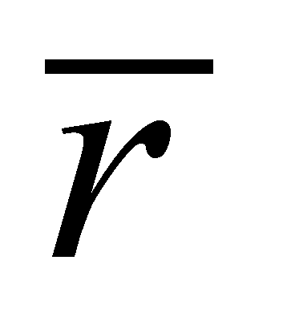
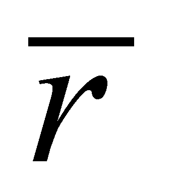

|
|
|
The density is an amount which is specific only to the even distributions, and it represents an abstract amount (that is the result of an abstract, computing process) which is generated by the ratio between the distributed amount and the amount of the distribution’s support domain. On short, the density represents the “overcrowding” degree of the amount distributed on the support interval, or (for the cumulative attributes) the attribute amount distributed on the abstract unit amount support. Since it is an abstract amount, the density cannot exist in the absence of an ISS which would be the recipient for its value, and without an IPS which would be assigned with its calculation, but it is used on a wide scale, being among others, the single attribute which allows the determination of the process intensities.
The intensity of a distributed motion process is determined by means of a virtual (theoretical, imaginary, computing) surface with a stable spatial position against an external reference (the same reference against which the distributed motion velocity is being computed).
Fig. X.15.1.1
By considering the volume V from the figure X.15.1.1 which contains the amount M, evenly distributed, with the density:
(X.15.1.1)
and a theoretical plane surface of
reference
 ,
with a steady position against an external reference. The internal T
reference (with a central inner position) of the volume V has
a position vector
against
the same external reference (non-displayed in the figure X.15.1.1 for
not making the scheme too complicated). Let us assume that, at a
certain moment t0,
the volume V, together with the amount M
which is evenly distributed in it, starts to move with the velocity:
,
with a steady position against an external reference. The internal T
reference (with a central inner position) of the volume V has
a position vector
against
the same external reference (non-displayed in the figure X.15.1.1 for
not making the scheme too complicated). Let us assume that, at a
certain moment t0,
the volume V, together with the amount M
which is evenly distributed in it, starts to move with the velocity:
(X.15.1.2)
which is considered to be uniform
(constant) within the interval t.
The intersection between the moving volume V
and the reference surface
 is
is
 ,
that is a surface with the normal line
,
that is a surface with the normal line
 (the same with the normal at
(the same with the normal at
 )
through which the transfer (displacement) of the amount M takes
place. The following amount shall cross through the surface
)
through which the transfer (displacement) of the amount M takes
place. The following amount shall cross through the surface
 in the interval
in the interval
 :
:
(X.15.1.3)
If the relation X.15.1.3 is divided by
 ,
we shall get:
,
we shall get:
(X.15.1.4)
that is a relation
identical with the relation 5.2.1.4 which defines the intensity of
the vector flux
through the surface
 .
This vector
has a major relevance in the present paper, being named flux
density vector (FDV) of the amount M.
One may notice that FDV is always collinear with the transfer rate,
and it is the carrier vector of the abstract amount
,
spatial density of the transported amount. In this way, the flux of
the amount M
may be displayed as a vector distribution of FDV (a vectorial field).
If the spatial distribution of the amount M
is not even, we shall divide the volume V in volume elements dV
with dimensions selected in the way
that the distribution of the amount M
to be even inside them. The intersection of this kind of element with
the surface
.
This vector
has a major relevance in the present paper, being named flux
density vector (FDV) of the amount M.
One may notice that FDV is always collinear with the transfer rate,
and it is the carrier vector of the abstract amount
,
spatial density of the transported amount. In this way, the flux of
the amount M
may be displayed as a vector distribution of FDV (a vectorial field).
If the spatial distribution of the amount M
is not even, we shall divide the volume V in volume elements dV
with dimensions selected in the way
that the distribution of the amount M
to be even inside them. The intersection of this kind of element with
the surface
 shall be
and the flux intensity through
shall be:
shall be
and the flux intensity through
shall be:
(X.15.1.5)
namely, the intensity of an elementary
flux. If the ratio between the flux intensity and the amount of
surface or
is being computed into the relations X.15.1.4 and X.15.1.5, the
surface density of the flux intensity shall result:
or
is being computed into the relations X.15.1.4 and X.15.1.5, the
surface density of the flux intensity shall result:
(X.15.1.6)
Thus, the meaning of FDV seems to be more clear, the modulus of the normal component of FDV through the reference surface is even the surface density of the flux intensity of the amount carried through that surface.
Comment X.15.1.1: One may notice that FDV has as component a cumulative attribute - that is the spatial density of the conveyed amount - fact which makes that FDV to become a cumulative attribute as well. Thus, the amount of the vectors FDV which are evenly distributed either on the surface or on its volume, having a common direction, it can be replaced (represented) by a single vector - the resultant - which will have a common direction and its modulus will be equal with the sum (spatial or surface integral) of FDV.
Copyright © 2006-2011 Aurel Rusu. All rights reserved.